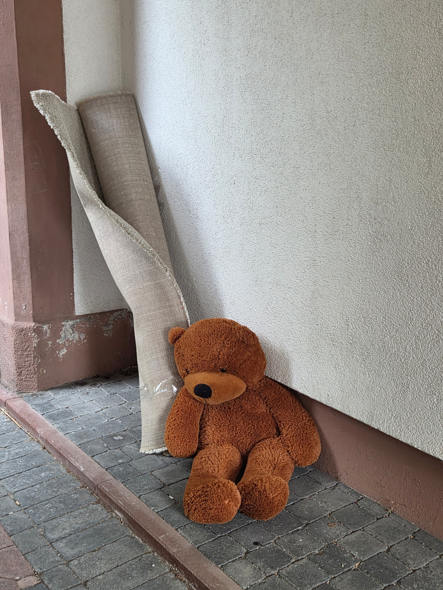

Someone abandoned a giant teddy bear in the downstairs passage of my apartment next to a rug and some wooden pallets, underneath a sign which forbids "Sperrmüll" from being dumped there. I don't really have space in my apartment and the teddy looked so sad and forlorn. I heard that people usually pick up stuff that's lying around, so I went out and when I returned, the teddy was still there. Tomorrow is Monday, which means it's likely the building caretaker would see it and dispose of it. I couldn't bear it anymore, so I took the teddy with me. I noticed he had a large scar on his chest, like someone tried to glue the hole together. Idiots. He's in my attic now, waiting to be washed and sewn together. My tiny apartment is about to have a new roommate. I'm struggling to understand why anyone would abandon him.
DISCLAIMER: All thoughts are my own.